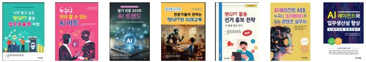

Today's Missions
오늘 직접 완성하는 결과물
3시간 동안 6개 미션으로 아래 결과물을 내 노트북에 남깁니다.
Practice Files
실습 파일 다운로드
강의 시작 전에 내려받아 두세요. 모든 조합·농가·매출 정보는 교육용 가상 자료입니다.
Before Class
실습 준비 체크 — 계정 · 앱 · 파일
시작 전에 4가지를 확인합니다.
준비물
로그인 문제는 실습 시작 전에 해결합니다. 옆 사람과 서로 확인해 주세요!
- ✓ ChatGPT 로그인chatgpt.com 또는 데스크톱 앱 · 유료 요금제 계정으로 로그인
- ✓ 실습 파일 받기위 ‘실습 파일 다운로드’에서 판매데이터(가상)·공문양식·회의록 예시 등
- ✓ Google 계정Gemini canvas · Google Flow 실습용 개인 Gmail로 로그인
- ✓ 화면 정리브라우저 창 2개 (ChatGPT · 실습 파일) · 다운로드 폴더 위치 확인
조합 업무 AI 보안 수칙 3가지
편리함보다 먼저 지켜야 할 기본 원칙
- 01 가명으로 바꾸기농가·조합원 실명, 연락처, 계좌번호는 ‘농가A’, ‘010-****’처럼 바꿔 입력
- 02 필요한 부분만계약서·내부 금액자료 원본 대신, 분석에 필요한 열·항목만 남겨 업로드
- 03 원본과 대조AI가 낸 합계·수치·출처는 반드시 원본으로 한 번 더 확인
Prompt Library
프롬프트 바로 찾기
제목을 누르면 해당 프롬프트로 이동합니다.
How to use
이렇게 사용하세요
- 01PART·미션 카드 또는 위 목록에서 필요한 프롬프트를 고릅니다.
- 02주황색 상자의 복사 버튼을 눌러 ChatGPT·Gemini에 붙여넣습니다.
- 03[ ] 안의 내용은 내 업무 상황에 맞게 바꿔 씁니다.
- 04강의 페이지 상단 프롬프트만 보기로 프롬프트만 모아 볼 수 있습니다.
안전하게 AI 활용하기
AI가 초안을 쓰고, 사람이 검증한다
- 개인정보실명 · 연락처 · 계좌는 넣지 않거나 가명 처리
- 사실 확인숫자 · 날짜 · 출처는 원본으로 다시 확인
- 저작권·초상권실존 인물 · 타사 로고 · 캐릭터 이미지 생성 주의, 홍보물은 사용 조건 확인
- 내부 기준조합의 AI 사용 기준과 보안 규정이 우선
- 최종 책임AI 결과물의 책임은 작성자에게 — 사람이 확인하고 승인
Introduction
강사 소개
기업 실무 맞춤 생성형 AI 교육 전문 · 누적 출강 1,000회 이상
김유라 강사
- 한국강사교육협회 협회원
- 미래교육아카데미 전임강사
- 배움더하기 협동조합 이사
- 신구대학교 특강강사
| 기업·대학 | 삼성생명 · 삼성증권 · 삼성카드 — 삼성 금융계열사 출강 SK하이닉스 · 아모레퍼시픽 · SPC · KBS미디어 · 앰코테크놀로지코리아 · LH · KOTRA 등 기업 중앙대 · 건국대 · 단국대 · 인하대 · 경상국립대 · 국립경찰대 · 성신여대 · 한국항공대 등 40여 개 대학 |
| 정부·공공기관 | 기후에너지환경부(장·차관 간부진) · 보건복지부(간부진 AI 특강) · 산업통상부(AX 리더십) · 국세청 · 소방청 · 기획재정부 · 국민연금공단 · 국민건강보험공단 · 한국수자원공사 · 국가공무원인재개발원 외 다수 |
| 국회·지방의회 | 국회의원회관 · 경기·경남·충남·충북도의회 · 인천·울산·대구광역시의회 · 행안부 지방의정연수센터 등 다수 |
저서

Organized by
교육 주관
과정ChatGPT로 끝내는 조합 행정·사무 업무 혁신 (3시간 · 노트북 실습)
강사김유라 · 한국강사교육협회
CAFE네이버 카페 ‘한국강사교육협회’ — 더 많은 AI 소식과 교육을 만나보세요.